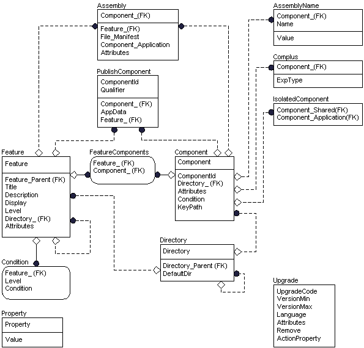

description: For more information about the following diagram, see the entity relationship diagram legend.
ms.assetid: ec4f585d-cbd5-4c25-aaf4-1c1333fd4587
title: Core Tables Group
ms.topic: article
ms.date: 05/31/2018
Core Tables Group
For more information about the following diagram, see the entity relationship diagram legend.

The core group consists of tables describing the fundamental features and components of the application and the installer package. Developers of install packages should therefore consider how to populate these tables first because the organization of much of the database will become apparent from the content of this group.
- The Feature table lists all features belonging to the application.
- The Condition table contains the conditional expressions that determine whether or not a particular feature will be installed.
- The FeatureComponents table describes which components belong to each feature.
- The Component table lists all components belonging to the installation.
- The Directory table lists the directories that are needed during the installation. Because each component must be associated with one and only one directory, the Component table is closely related to this table and has an external key to the Directory table.
- The PublishComponent table lists the features and components that are published for use by other applications. Components and Features are the two types of feature advertisement.
- The MsiAssembly table specifies Windows Installer settings for .NET Framework common language runtime assemblies and Win32 assemblies.
- The MsiAssemblyName table specifies the schema for the elements of a strong assembly cache name for a common language runtime or Win32 assembly.
- The Complus table contains information needed to install COM+ applications.
- The IsolatedComponent table associates the component specified in the Component_Application column (commonly an .exe) with the component specified in the Component_Shared column (commonly a shared DLL).
- The Upgrade table contains information required during major upgrades.
Â
Â